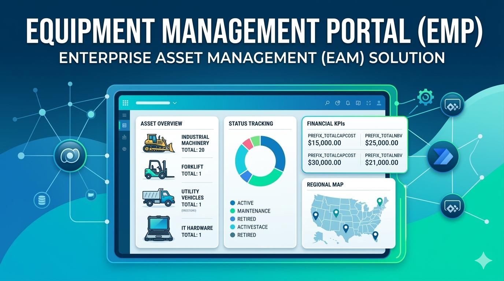

Data Management System
Equipment Management Portal (EMP)
Centralized asset and equipment tracking solution designed to replace fragmented spreadsheet-based processes with a more structured operating model for lifecycle visibility, data integrity, and cross-functional access.
Positioned as a business systems and data architecture initiative focused on standardization, relational structure, and operational visibility across equipment records rather than isolated local tracking.
Business Context
Business Issues Addressed
EMP was designed to replace fragmented equipment tracking methods with a centralized operating model that improves data consistency, lifecycle visibility, and administrative control.
Primary Business Issues
- Equipment records managed across disconnected spreadsheets and regional files
- Limited consistency in how lifecycle updates, assignments, and status changes were tracked
- Reduced visibility into asset history, ownership, and active operational state
- Higher risk of duplicate records, outdated information, and process inefficiency
Operational Consequences
- Difficulty establishing a single reliable source of truth for equipment data
- Increased manual reconciliation between teams and tracking methods
- Reduced confidence in reporting and downstream operational decisions
- Limited scalability as asset volume and administrative complexity increased
System Design
Solution Architecture
EMP introduces a centralized portal model supported by structured data design, standardized record handling, and a long-term integration direction intended to improve trust, visibility, and maintainability of equipment data.
Architecture Direction
The portal was designed to support a more controlled data environment where equipment records can be organized through relational structure rather than disconnected flat-file tracking.
- Centralized record management
- Relational data modeling direction
- Standardized handling of equipment lifecycle states
- Improved visibility into operational asset information
Delivery Model
The solution direction emphasizes Dataverse-oriented structure and future enterprise data integration to support scalable asset management, reporting consistency, and stronger governance over equipment information.
Capability Areas
System Capabilities
The portal was shaped around centralized record control, more reliable equipment tracking, and a stronger foundation for scalable data management.
Centralized Asset Tracking
Equipment records were moved toward a unified system model to improve consistency and reduce fragmented tracking.
Relational Data Structure
The design direction supports more scalable data relationships and stronger integrity than spreadsheet-based tracking methods.
Lifecycle Visibility
Improved ability to monitor equipment status, assignment, and record history across operational use.
Governance Foundation
The system supports cleaner ownership, standardized updates, and stronger long-term data management controls.
Strategic Value
Impact
The primary value of EMP is the establishment of a more reliable system foundation for equipment data, reducing fragmentation while improving visibility, scalability, and operational trust.
Operational Outcomes
- Reduced dependency on spreadsheet-based local tracking
- Improved consistency in how equipment information is organized and maintained
- Better visibility into active equipment records and lifecycle state
System Outcomes
- Created a stronger architectural base for centralized equipment management
- Improved readiness for future reporting and enterprise data integration
- Established a more scalable direction for long-term asset data governance
Project Navigation
Source and Portfolio Links
Move to the broader portfolio or review the full repository directly.
Main Portfolio
Return to the primary portfolio landing page.
Source Repository
Review the repository and supporting documentation directly on GitHub.